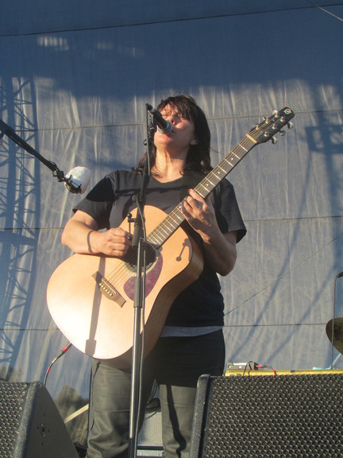

FYF 2013 Highlights Reel
Celebrating its 10th anniversary this year, Downtown LA’s FYF has grown into one of the most notable festivals the summer has to offer. What started out as a tiny, punk-informed operation in Echo Park has now grown into Coachella’s impetuous smaller brother, one that’s just as ambitious, but with a sense of integrity intact. This year’s lineup was their most varied and eclectic yet, and the influx of notable acts was such that it was inevitable to make some sacrifices. Nevertheless, here’s a small sampling of some of the most engaging acts I got to presence this year.
Jonathan Richman wins the hearts of a new generation.
The modern lover himself, Jonathan Richman’s unassuming set kicked off Sunday afternoon with a heartwarming performance that had a throng of new fans clamoring for his sing-speak confessionals. Holding an acoustic guitar and his trusty sidekick of over twenty years by his side, Tommy Larkin, the venerable Massachusetts songwriter breezed through a 40-minute set of flamenco-style strumming in the happiest of moods. He strutted some moves with a silly quirk – hips shaking and head bobbing - as he advised us that true love is actually quite nice. I’m not sure if the young 'uns were following his advice, but they’ll sure be more grateful for it as they grow older.

Mac DeMarco’s amiable tomfoolery.
A Mac DeMarco live set is always an unpredictable experience, and this weekend wasn’t any different. Holding a wide grin that recalls the MAD magazine kid, his quirkily attuned melodies jangled to the rhythm of his slack demeanor as the sun hit with scorching intensity. His half-an-hour set was much too short for a performer with such an enchanting personality, who constantly interacted with his audience with the occasional tomfoolery without overstaying his welcome. Best of all, he started his infamous closing-set medley with Bachman Turner Overdrive’s Taking Care of Business with an affected hoarse voice before giving his usual homage to Blackbird and, um, Limp Bizkit. This alone is reason to never miss him when he’s playing in a town near you.

Charles Bradley shows the meaning of true soul.
A late bloomer of sorts, Charles Bradley has become the ambassador of soul in a time when such a thing hardly matters to the masses. His brand of Southern soul felt antiquated, but all too necessary, sweating every drop of sweat in his body as he yowled and pleaded across the entire stage, truly living it up and not even close to falling into self-parody. A true performer in the classic sense, he made sure to make his presence felt by catwalking and thrusting his goods, suggesting a sleazy sensuality that contemporaries in his vein could only dream of. It was daring, commanding, and sumptuously divine.

Kurt Vile’s locks drift with a swooning calm.
A welcome reprieve from all the blistering garage madness, the Philadelphia bred singer/songwriter’s performance was expectedly calm and collected as he drawled his way through narcotic jams like Wakin’ on a Pretty Daze (the weather couldn’t be any more apt) and crunchier tunes like KV Crimes. But the highlight of the set came right at the end, when the Violators left the stage and let Vile perform a transcendent, fingerpicking rendition of Smoke Ring For My Halo highlight Peeping Tomboy. And just like that, he slightly bowed as he concluded a set that felt criminally short.

Yo La Tengo’s algorithmic precision.
Yo La Tengo is a band of many faces, so it’s really difficult to pinpoint which direction they’ll take when they’re constricted to an allotted time of 55 minutes. They set expectations straight just as an audience member began to request songs, making sure to let us know that their set was entirely calculated. Considering that their latest, Fade, is one of their most tranquil efforts, they made sure to follow the tempered ambience of that album with the mantric throbbing of Ohm and the diffident pulse of Before We Run. That didn’t mean that Ira Kaplan found a way to convey his inner Jimi Hendrix by throwing himself into the floor with one of his forceful guitar freakouts, but Georgia Hubley stole his thunder with a heartwarming acoustic rendition of Tom Courtenay as the pinkish sun lit the city, proving that a quiet tune can sometimes be more imposing than filler noise.
Beach House takes dream pop into arena rock territory.
After witnessing Beach House in a live setting for the first time, I was fairly certain that they were trying to be dubstep’s answer to the Cocteau Twins. Regardless of how surprisingly bombastic it was, especially since their ballads are usually cloaked in a swirling haze, I was mesmerized over how their echoing soundscapes managed to wrap your ears in a disarray without ever becoming intrusive. As Victoria Legrand’s locks flew as she circled her head, their bittersweet anthems took a more precarious route with each pounding bass drum and throbbing, synth-laden pulse. It made me see them in an entirely new light.

Karen O's crazy antics.
She spouted water up the air like a whale, serpertined her way across the stage, and any other animal movements you can think of. And then there's this?
My Bloody Valentine ends the festivities with a bang.
My Bloody Valentine served as master of ceremonies with an ear bleeding set that proves that the shoegaze mainstays are meticulous perfectionists of noise. Their towering performance was surely the most expensive in the festivals’ history (there was even an analog soundboard in display), and Shields and company made sure to deliver a sadistic miasma of unfettering dissonance. As expected, the PA cut out a few times, forcibly interrupting their set with unwelcome silence, with a rather remorseful Shields letting the crowd know that the issues were not intentional. But all those sound hiccups were presumably a practice run for MBV to make things right with blistering finale You made Me Realise, which was so loud there were reports of outsiders complaining that they could hear it from the fairly distant Union Metro Station.

The Breeders celebrate 20 years of Last Splash.
It was somewhat surreal to see the Deal sisters looking like middle-aged soccer moms in stage, but they proved they’ve still got the chops as they played an incredibly faithful rendition of Last Splash. I must admit I’ve never been one to enjoy full-length album experiences in a live setting, but the Breeders made sure to enhance the predictability of such an experience by utilizing some of the sonic accouterments that gave the original production that special alt. rock fuzz. Kelley Deal also unexpectedly remarked: “I thought this festival was called Fuck You Fest”. And how could you not love that.

Deerhunter pose as glam-rock gods.
Though there’s a slight discrepancy in terms of image - Bradford Cox wants to go full-on glam while the rest of the band want to look like Feelies apprentices – Deerhunter are really a band that shines when they emphasize accessible, yet experimental pop tunes. They’ve outgrown their more outré noise excursions while retaining its allure, and even the rough-hewed production of Monomania sparkled instead of snarling in a live setting. But they still didn’t forget some of their classic repertoire, which included an always-enjoyable extended outro of Nothing Ever Happened.
Solange makes you forget about her big sister…almost.
It’s impossible not to like an artist like Solange, whose new wave via synth funk sound creates a flavorful mélange of melody and harmony. She had us thrusting and grinding to her skronky, yet oftentimes sweet-tinged tunes, preaching in the name of soul as her disciples made sure to make awkward hipsters dance their hearts out without any shame. It’s as simple as that – when Solange wants you to bust a move, you best better listen.
Death Grips actually showed up.

Photography:
Juan Octavio: Kurt Vile, Yo La Tengo, The Breeders, Solange.
Ryan Bussard: Mac DeMarco, Death Grips
Tod Seelie: Charles Bradley, Karen O, Deerhunter.